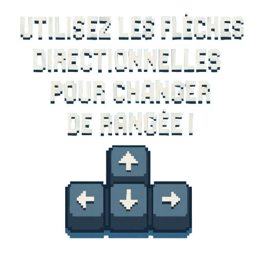

<app-template>

    <!--------------------------------------------------------------------------
    ---                              NAVBAR                                  ---
    --------------------------------------------------------------------------->

    <app-navbar>
        <app-navbar-button
            class="navbar-button"
            [routerLink]="['/child/games-list']"
            routerLinkActive="active"
        >
            Lancement de la partie
        </app-navbar-button>
    </app-navbar>


    <!--------------------------------------------------------------------------
    ---                               MAIN                                   ---
    --------------------------------------------------------------------------->

    <app-body>
        <app-inner-box *ngIf="state === 'En attente'" class="main-box transparent little">
            
            
        </app-inner-box>
        <app-inner-box *ngIf="state === 'En attente'" class="main-box blue little">
            <p class="title">Joueurs en attente</p>
            <app-user-card
                *ngFor="let player of players"
                [user]="player"
                class="horizontal lobby unclickable"
            ></app-user-card>
        </app-inner-box>
        <app-inner-box *ngIf="state === 'En attente'" class="main-box transparent little">
            
            
        </app-inner-box>

         <div *ngIf="state === 'En préparation'" class="countdown-container">
            <div *ngIf="countdown > 0" class="countdown-number animate">
                {{ countdown }}
            </div>
            <div *ngIf="countdown === 0" class="countdown-number go-message animate">
                GO !
            </div>
        </div>
    </app-body>

</app-template>